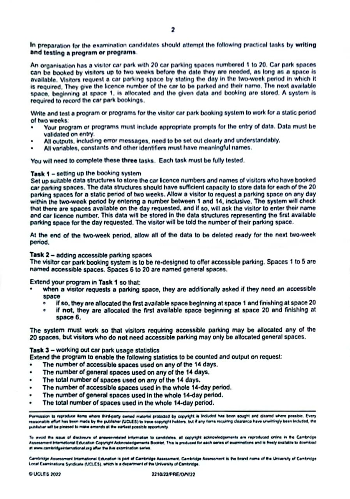
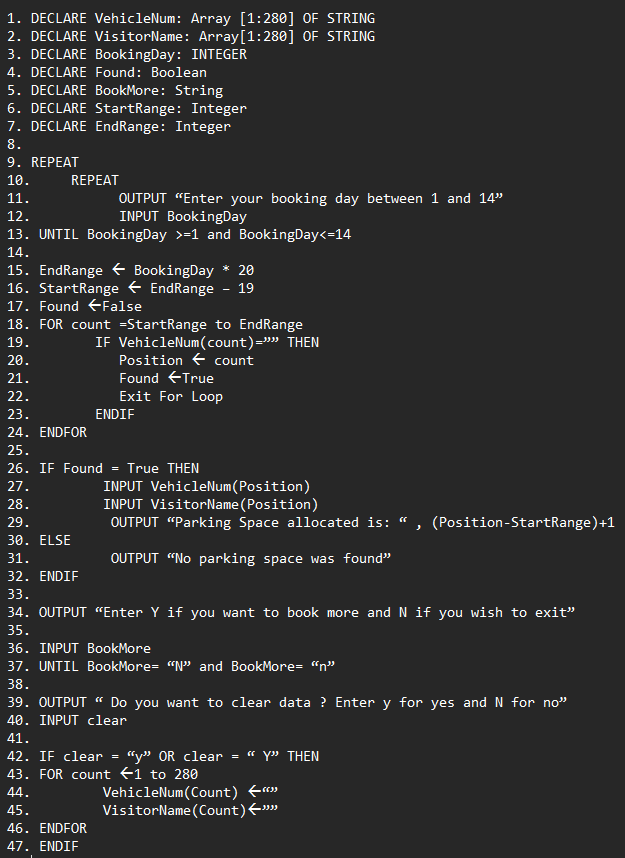

This computer project require students to write a system for an organization who need car parking tickets program.
Note that support has been provided by teachers and for the system we can write in pseudocode or visual basic programming language. I choose to write in pseudocode as i was new to programming language.
 An array of size 280 is reserved to store the license numbers. 280 because there are 20 parking spaces and 14 days. (20 x 14 =280) An array of size 280 is reserved to store the visitors name. 280 because there are 20 parking spaces and 14 days. (20 x 14 =280) Variable to which the User will input a number between 1 and 14. A string variable to input either ‘y’ or ‘Y’ if the user needs to do more booking For a particular day we calculate the starting range for the parking space. For a particular day we calculate the ending range for the parking space. Input a day number between 1 and 14. Perform a range check between 1 and 14. User should input a value between 1 and 14. Compute Starting Range and ending range. If a parking space is found or free, the found variable will be set to true. The parking number allocated is calculated using the formula. User input vehicle num and visitor name to store.Enter Y to clear all data and N to not clear it. Clear all data from the array at the end of the two weeks period.
Compute start range and end range Set count variable to zero.: Loop to check for free parking spaces starting at position 1 to 5. Increment count variable if it is not free. compute start range and end range Set count variable to zero.Loop to check for free parking spaces starting at position 6 to 20. Increment count variable if it is not free. Total CountGeneral between 1 and 5.Compute start range and end range. Compute Park No. Check if it is an accessible parking which is not free Increment count accessible. Check if it a general parking which is not free. Increment count general.
- Logical thinking
- Problem solving
- Group work
- Curiosity
- Adaptability